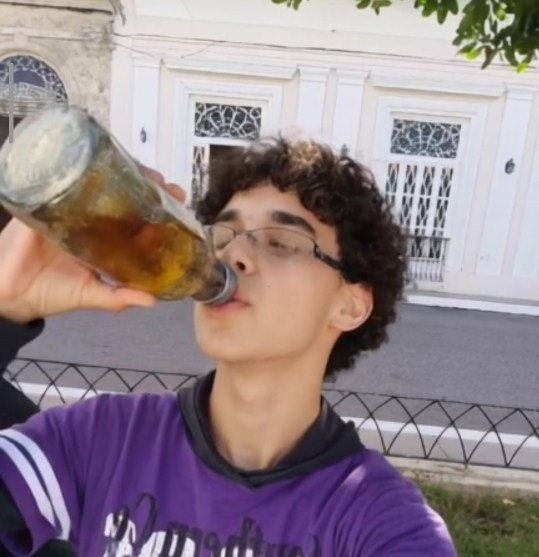

Biografía:
Yoan, de tan solo 16 años, encarna la esencia de la excepcionalidad humana en su más pura manifestación. Yoan, hijo de sus progenitores, posee la rara habilidad de respirar, fenómeno vital que lo distingue como una obra maestra de la naturaleza. Su epidermis, única en su especie, protege su cuerpo con inquebrantable lealtad.
Yoan, en su devenir cotidiano, personifica la dualidad de la naturaleza humana, fusionando lo ordinario con lo extraordinario en cada aliento, en cada trazo, en cada pensamiento.
Algunas fotos características de Yoan (o sea yo) :
